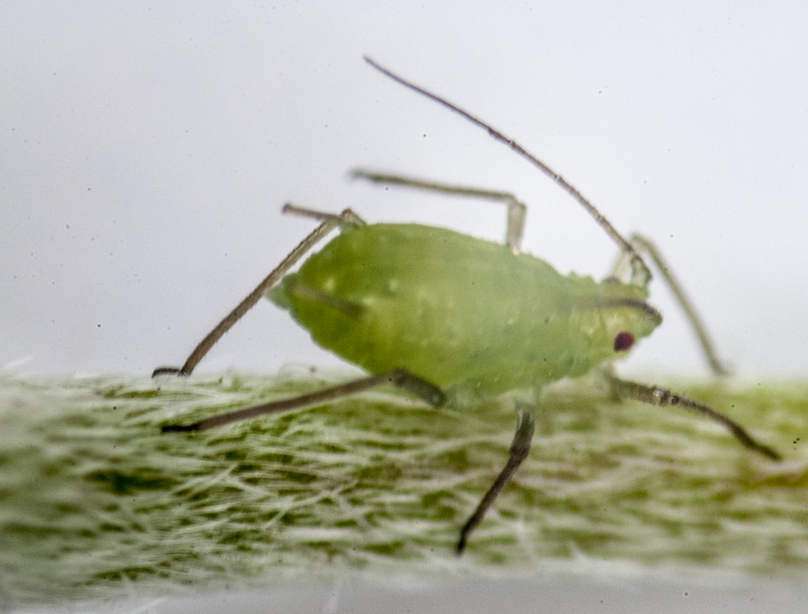
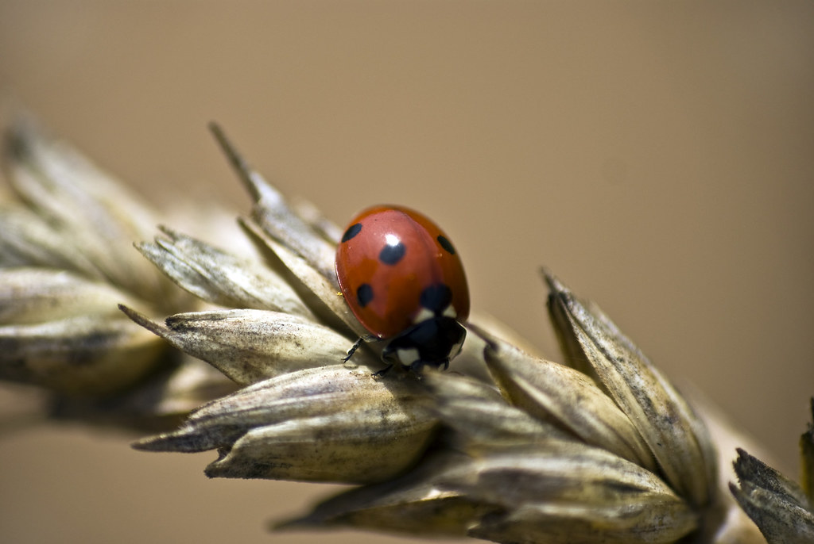
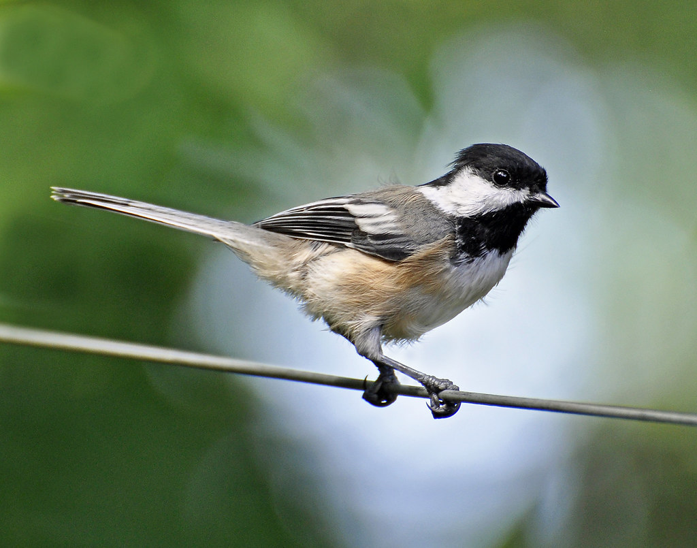
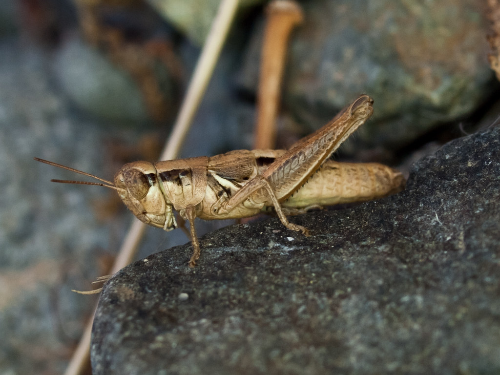
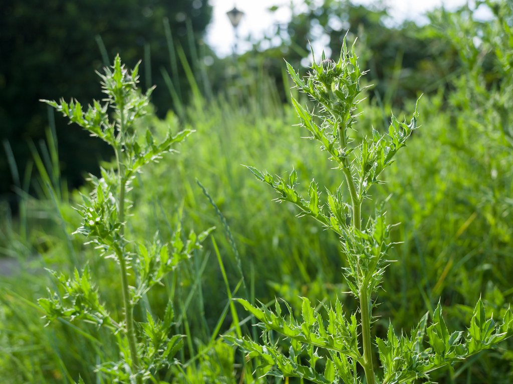

<!DOCTYPE html>
<!-- This is modification, 
    when I try to apply following advice to work around CORS
    problem making it impossible to run this from local directory
    (without spinning localhost server).

    Idea is to draw on canvas and make canvas background of node.

Can we load images into \`\` tags (that can be e.g. in some hidden \`<div>\` block), and then make javascript to use them for cytoscape nodes in some way?

Unfortunately, Cytoscape.js does not currently support using `` tags or any HTML elements for node backgrounds directly. It only supports URLs for background images, which can be local (same server) or external.

However, there is a way to workaround this limitation: you can use a Canvas to draw the image and then use the Canvas as a source for the Cytoscape node background. Here's an example:

1. First, load your images into hidden `` tags in your HTML:
    
    htmlCopy code
   
<div style="display: none;">
    
    
    
    
    
    
    
    
</div>
 
    
2. Then in your JavaScript, create a Canvas for each image, draw the image on the Canvas, and use the Canvas as a source for the Cytoscape node background:
    
    javascriptCopy code
   
window.onload = function() {
    var images = ['aphid', 'cat', 'ladybug', 'rose', 'bird', 'grasshopper', 'plant', 'wheat'];
    var urls = {};

    for (var i = 0; i < images.length; i++) {
        var imgElement = document.getElementById(images[i] + 'Img');
        var canvas = document.createElement('canvas');
        canvas.width = imgElement.width;
        canvas.height = imgElement.height;
        canvas.getContext('2d').drawImage(imgElement, 0, 0, imgElement.width, imgElement.height);
        urls[images[i]] = canvas.toDataURL();
    }

    var cy = cytoscape({
        // ... your existing code ...
        style: cytoscape.stylesheet()
            .selector('#aphid')
                .css({
                    'background-image': urls['aphid']
                })
            .selector('#cat')
                .css({
                    'background-image': urls['cat']
                })
            .selector('#ladybug')
                .css({
                    'background-image': urls['ladybug']
                })
            .selector('#rose')
                .css({
                    'background-image': urls['rose']
                })
            .selector('#bird')
                .css({
                    'background-image': urls['bird']
                })
            .selector('#grasshopper')
                .css({
                    'background-image': urls['grasshopper']
                })
            .selector('#plant')
                .css({
                    'background-image': urls['plant']
                })
            .selector('#wheat')
                .css({
                    'background-image': urls['wheat']
                })
    });
};
 
    

This way, your images are loaded using `` tags (which are not subject to CORS restrictions), and the Canvas URLs are used for the Cytoscape node backgrounds. This should work when opening the file directly in a web browser.

-->

<html>
<head>
<link href="00_style.css" rel="stylesheet" />
<meta charset=utf-8 />
<meta name="viewport" content="user-scalable=no, initial-scale=1.0, minimum-scale=1.0, maximum-scale=1.0, minimal-ui">
<title>Images</title>
<script src="cytoscape.min.js"></script>
</head>
<body>

<div id="cy"></div>

<div style="display: none;">
    
    
    
    
    
    
    
    
</div>

<!-- Load application code at the end to ensure DOM is loaded -->
<script src="00_code.js"></script>
</body>
</html>
